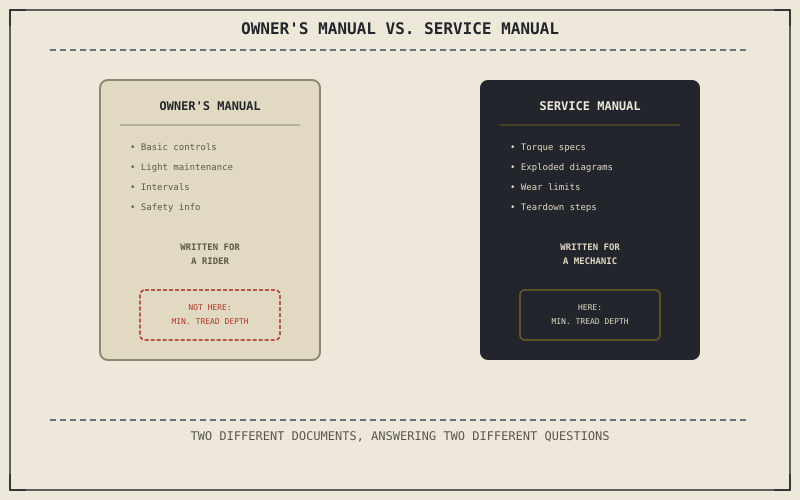

Chapter 12.2 closed by pointing to where a specific torque value actually comes from, and the honest answer is a document most riders never open: the service manual, not the thinner owner's handbook that ships with the bike. Learning to navigate one is its own small skill, separate from owning the tools Chapter 12.1 described or knowing how to use them correctly the way Chapter 12.2 explained.
Chapter 12.2 closed with a torque wrench that's only useful once a rider knows the specific number to set it to. This chapter is about where that number, and everything else this book's diagnostic chapters have implicitly assumed a rider could look up, actually lives.
Two Different Documents, Easily Confused
An owner's manual, the thinner booklet that comes with a new motorcycle, is written for a rider: basic controls, light maintenance intervals, and safety information, deliberately kept accessible rather than technical. A service manual is a genuinely different document, written for a mechanic performing an actual repair — every torque specification, wear limit, and teardown procedure this part's earlier chapters have assumed exists somewhere is found here, not in the owner's manual. Reaching for an owner's manual expecting a caliper bolt's torque value is the single most common reason riders conclude, incorrectly, that the information simply isn't published anywhere.
Finding the Number That Actually Matters
A service manual is organized by system rather than by narrative, mirroring the physical layout of the machine itself — an engine section, a chassis section, an electrical section, each opening with a specification table before any procedure begins. Exploded diagrams, showing every part of an assembly pulled apart along its assembly axis with each component numbered, let a rider identify exactly which fastener a given torque value in the table actually refers to, since a specification table alone rarely names a part in language matching casual conversation.
An owner's manual and a service manual answer completely different questions — one is written for a rider, the other for a mechanic — and looking for a torque specification in the wrong one is the most common reason riders conclude that information simply isn't published anywhere.

A diagram contrasting an owner's manual, covering basic operation and light maintenance, against a service manual, organized by system with specification tables, exploded diagrams, and wear limits for full repair procedures.
Wear Limits: A Number to Compare Against, Not Just a Torque Value
A service manual doesn't only list torque values; it lists wear limits, a specific measurement below or above which a part is considered no longer serviceable. Chapter 6.7 taught a rider to recognize a worn tyre by its pattern, but a service manual's minimum tread depth turns that recognition into an actual number to measure against, the same way it gives a specific minimum brake pad thickness for the wear Chapter 10.6 described inspecting. This is Chapter 11.1's confirmation principle in its most literal form: a measured number compared against a published limit, rather than a subjective judgment about whether something looks worn enough to matter.
A Common Misconception, Cleared Up Early
It's a common shortcut to treat a general online forum post or video, covering a similar-sounding motorcycle, as an adequate substitute for the actual service manual matched to a specific model and year. Torque values and wear limits are validated for a specific engine, frame, and component combination, and even a closely related model year can carry different specifications for the same-looking fastener. A service manual matched exactly to the bike in front of you is the only source those earlier chapters' numbers were actually validated against.
Where This Leads
The right tools, used correctly, guided by the right reference — one piece is still missing: a physical space safe enough to actually do the work in. Chapter 12.4 turns to setting up a safe home workshop next.
Key Concepts to Remember
- A service manual, not the thinner owner's manual, is where torque specifications, wear limits, and full repair procedures are actually published.
- Exploded diagrams and specification tables let a rider identify exactly which fastener or part a given value refers to.
- Torque and wear specifications are validated for a specific model and year, which is why a general forum post or video isn't a reliable substitute for the matched manual.
Cross-References
| ← Ch. 12.2 | Established that a torque wrench needs a specific value to be useful; this chapter identifies the service manual as the source of that value. |
| ← Ch. 6.7 | Taught reading tyre wear patterns visually; this chapter shows the service manual's published tread-depth limit turning that reading into a specific measurement. |
| ← Ch. 11.1 | Established confirming a cause before repairing it; this chapter treats a service manual's wear limits as that confirmation principle in its most literal, measured form. |
| → Ch. 12.4 | Covers setting up a safe home workshop. |